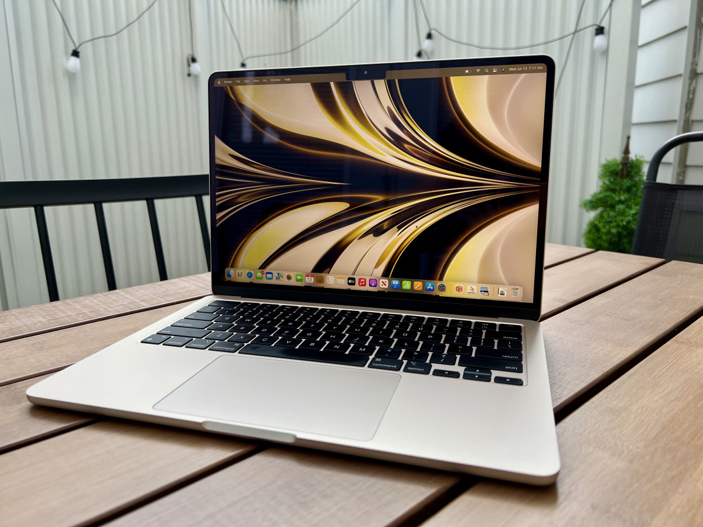

- Apple
- Dell

- Hp

- Apple MacBook Air M2

- Dell XPS 13
- Razer Blade 14
- HP Spectre x360 14
A laptop computer or notebook computer,also known as a laptop or notebook,is a small,portable personal computer (PC).Laptops typically have a clamshell form factor with a flat panel screen (usually 11–17 in or 280–430 mm in diagonal size) on the inside of the upper lid and an alphanumeric keyboard and pointing device (such as a trackpad and/or trackpoint) on the inside of the lower lid,although 2-in-1 PCs with a detachable keyboard are often marketed as laptops or as having a "laptop mode".Most of the computer's internal hardware is fitted inside the lower lid enclosure under the keyboard,although many laptops have a built-in webcam at the top of the screen and some modern ones even feature a touch-screen display.In most cases, unlike tablet computers which run on mobile operating systems,laptops tend to run on desktop operating systems,which were originally developed for desktop computers.
A Flash drive (also thumb drive [US], memory stick [UK], and pen drive/pendrive elsewhere)[1][note 1] is a data storage device that includes flash memory with an integrated USB interface. A typical USB drive is removable, rewritable, and smaller than an optical disc, and usually weighs less than 30 g (1 oz). Since first offered for sale in late 2000, the storage capacities of USB drives range from 8 to 256 gigabytes (GB[note 2]), 512 GB and 1 terabyte (TB[note 3]).[4][5] As of 2023, 2 TB flash drives were the largest currently in production.[6][7] Some allow up to 100,000 write/erase cycles, depending on the exact type of memory chip used, and are thought to physically last between 10 and 100 years under normal circumstances (shelf storage time[note 4]).
A smartwatch is a portable and wearable computer device in a form of a watch; modern smartwatches provide a local touchscreen interface for daily use, while an associated smartphone app provides management and telemetry, such as long-term biomonitoring. While early models could perform basic tasks such as calculations, digital time telling, translations, and game-playing, smartwatches released since 2015 have more general functionality closer to smartphones, including mobile apps, a mobile operating system, and WiFi/Bluetooth connectivity. Some smartwatches function as portable media players, with FM radio and playback of digital audio and video files via a Bluetooth headset. Some models, called watch phones (or phone watches), have mobile cellular functionality such as making telephone calls.

A desktop is a computer display area that represents the kinds of objects found on top of a physical desk, including documents, phone books, telephones, reference sources, writing and drawing tools, and project folders.It can be contained in a window that is part of the total display area or can be full screen, taking up the total display area. Users can have multiple desktops for different projects and work environments, and they can switch between them.A desktop on a computer display is different from a desktop computer, which is personal computer (PC) that sits on a desk or table.


Headphones are a pair of small loudspeaker drivers worn on or around the head over a user's ears. They are electroacoustic transducers, which convert an electrical signal to a corresponding sound. Headphones let a single user listen to an audio source privately, in contrast to a loudspeaker, which emits sound into the open air for anyone nearby to hear. Headphones are also known as earphones[1] or, colloquially, cans.[2] Circumaural ('around the ear') and supra-aural ('over the ear') headphones use a band over the top of the head to hold the speakers in place. Another type, known as earbuds or earpieces,[1] consists of individual units that plug into the user's ear canal. A third type are bone conduction headphones, which typically wrap around the back of the head and rest in front of the ear canal, leaving the ear canal open. In the context of telecommunication, a headset is a combination of a headphone and microphone.